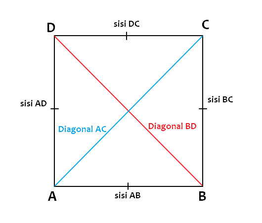
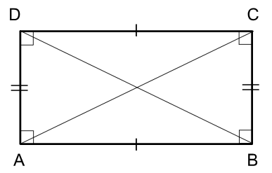

Welcome to Katik
Hai Sobat, Selamat Datang Di Katik :)
Sebuah web app sederhana yang berfungsi untuk menghitung nilai luas dan keliling bangun datar.
Dengan web app ini dapat memudahkan pengguna dalam menghitung luas dan keliling bangun datar seperti persegi dan persegi panjang.
Kedepannya juga web app ini akan di tambahkan kalkulator untuk menghitung pembagian, perkalian, penjumlahan, pengurangan dll. Guna membantu pengguna dalam perhitungan secara cepat.
- PERSEGI -
Luas Persegi
Rumus Luas Persegi Yaitu :
L = S x S
Rumus Keliling Persegi Yaitu :
K = 4 x S
- Dimana :
- L = Luas
- S = Sisi
- K = Keliling
Hasil
Luas Persegi = ... satuan luas
Keliling Persegi = ... satuan panjang
- PERSEGI PANJANG -
Luas Persegi Panjang
Rumus Luas Persegi Panjang Yaitu :
L = p x l
Rumus Keliling Persegi Yaitu :
K = 2 x (p + l)
- Dimana :
- L = luas
- S = sisi
- K = keliling
- p = panjang
- l = lebar
Hitung Luas Persegi Panjang
Hasil
Luas Persegi Panjang = ... satuan luas
Keliling Persegi Panjang = ... satuan panjang